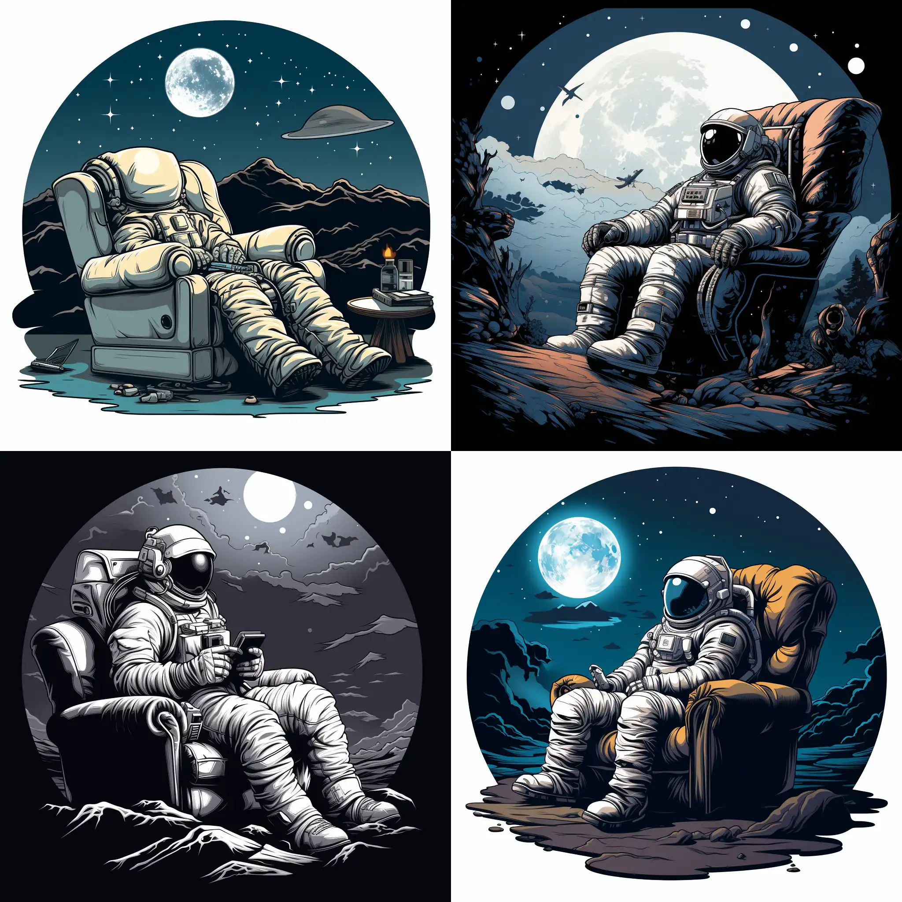
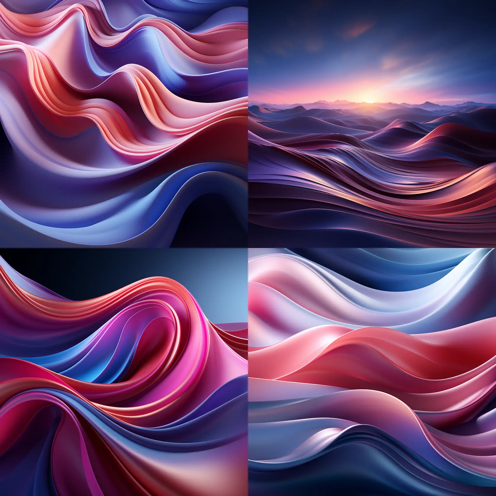
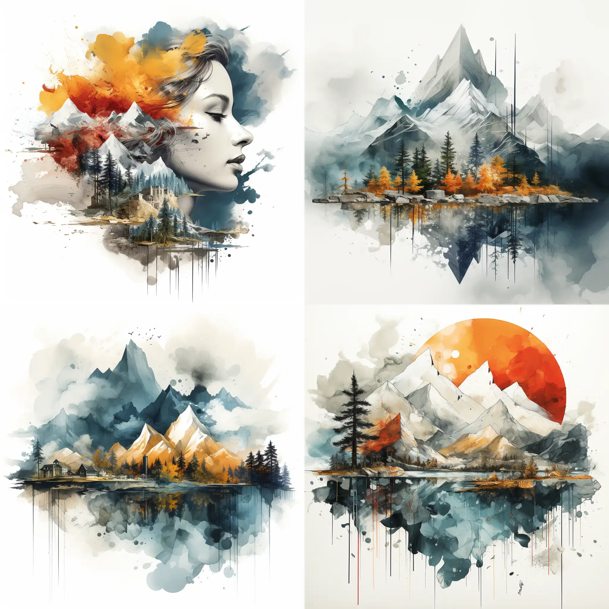
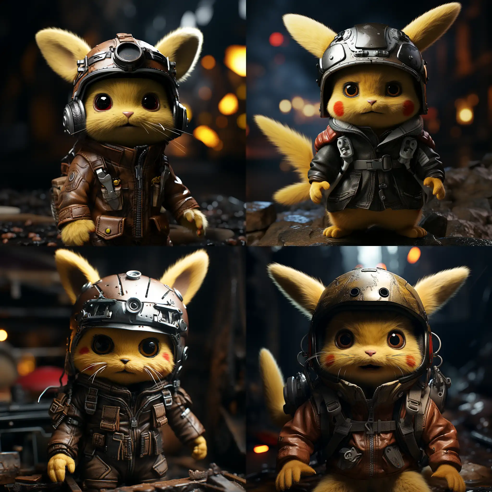

探索midjourney(一)：人工智能生成图像软件的惊人之旅
人工智能（AI）的快速发展为我们带来了许多令人兴奋的技术创新。其中一项令人瞩目的成果是人工智能生成图像软件，它通过机器学习和深度学习算法，能够创造出惊人逼真的图像。在本文中，我将分享我的旅程，探索这项令人着迷的技术，并展示它的潜力与魅力。这个系列我会长期更新下去
midjourney是什么？
midjourney是一个人工智能生成图像软件，它可以生成惊人逼真的图像。它的工作原理是：它通过机器学习和深度学习算法，学习了大量的图像数据，然后通过这些数据，生成惊人逼真的图像。
midjourney的使用
midjourney的使用非常简单，你只需要在这里注册并订阅输入你想要生成的图像的描述，然后点击生成按钮，midjourney就会生成一个惊人逼真的图像。
需要付费订阅，偶尔有放开免费体验的时候，可以去试试
midjourney的demo
下面是我使用midjourney生成的一些惊人逼真的图像。我会为大家推荐一下我最喜欢的几张图像。
1. 数字墙纸，抽象艺术，曲线流畅，紫色，粉色和蓝色，32k超高清，微妙的渐变，充满活力的，夸张的场景，Dariusz Klimczak，新地形，红移，深弯曲，超细节
digital wallpaper, abstract art, in the style of smooth curves, purple and pink and blue, 32k uhd, subtle gradients, vibrant, exaggerated scenes, dariusz klimczak, new topographics, redshift, deep curving, hyper-detailed

2. 白色背景线条灰色卡通贴纸，一名宇航员坐在漂浮在太空中的沙发上看电视。背景中有星星和月亮。
white background linework greyscale cartoon sticker of an astronaut watching Television while sitting on a couch that is floating in space. Stars and moon in the background.
3. 以毕加索为灵感的油画和山水照片的双重曝光
Double exposure of a painting inspired by Picasso and a mountain landscape photo

4. 皮卡丘摩托车手，头盔细节，微距镜头，高细节，照片逼真，电影般的灯光
Pikachu biker with crash helmet detail, macro lens, high details, photorealistic, cinematic lights
